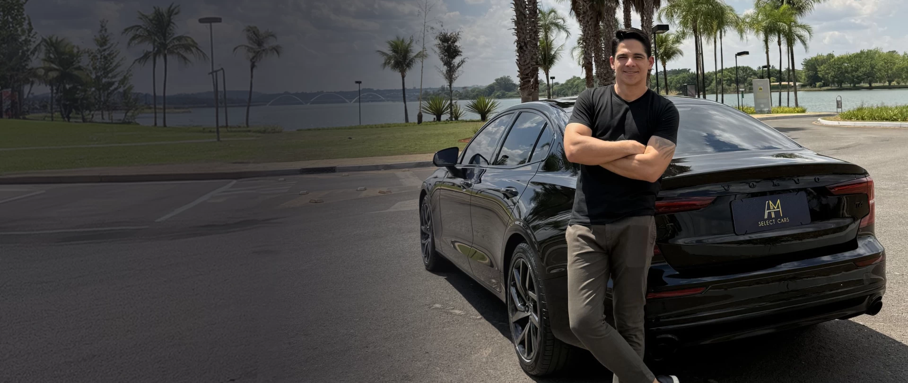
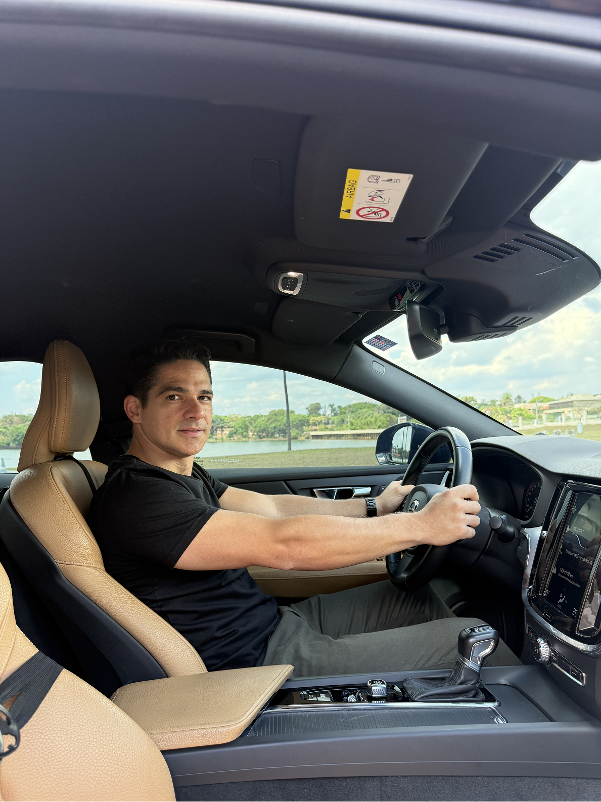
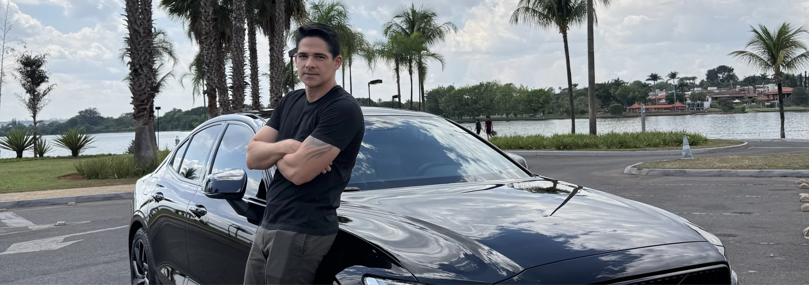

Seu tempo
preservado
Sem responder a curiosos nem mostrar o carro a estranhos. Você segue focado no que importa: saúde, família e trabalho.

A AM Select Cars é a assessoria especializada para cuidar de todo o processo de venda de seu veículo premium. Do início ao fim, com discrição e segurança.
Dedique atenção ao que realmente importa na vida: saúde, família e trabalho.

Responder curiosos o dia inteiro emostrar o carro para estranhos.
Interessados que só querem"dar uma olhada" e somem.
Propostas de troca em agênciasmuito abaixo do valor de mercado.
Semanas com o anúncio parado,enquanto o carro desvaloriza.
E o pior: o risco na hora de fechar, golpe,comprador enrolado, "pode confiar".
Vender um carro de alto padrão por conta própria não é economia. É comprometer tempo, energia, dinheiro e segurança, sem necessidade.
E como resultado entregamos segurança, economia de tempo, de energia e de dinheiro.
Sem responder a curiosos nem mostrar o carro a estranhos. Você segue focado no que importa: saúde, família e trabalho.
Filtramos compradores, conduzimos as tratativas e eliminamos o risco de golpes. Você não precisa lidar com desconhecidos.
Na troca direta com lojas o valor costuma ficar bem abaixo do mercado. Com a intermediação você recebe mais pelo seu carro.
Precificação estratégica, fotos e vídeos profissionais e visibilidade nas principais plataformas.
Você não abre mão do carro enquanto ele está à venda. Siga usando normalmente até que o negócio seja concluído.
Análise do estado de conservação, estudo de mercado e definição do valor justo.
Cuidados estéticos para deixar o carro ainda mais atrativo antes de ir ao mercado.
Fotos, vídeos e anúncios profissionais nas principais plataformas.
Triagem de interessados qualificados. Curiosos e golpistas não chegam até você.
Condução do fechamento com segurança, suporte na burocracia, documentação e logística.
Compra de veículo
Tive uma experiência extremamente satisfatória ao adquirir meu veículo com a assessoria do Assis, da Selectcar. Fiquei impressionado com o cuidado e a paciência em apresentar todos os detalhes do carro, desde o histórico de manutenção até as verificações feitas no local. Todo o processo foi conduzido com muita transparência e riqueza de informações. Recomendo fortemente.
Avaliação de cliente
Venda do Fiat 500
Agradeço ao Assis pelo serviço de assessoria de intermediação de venda do veículo Fiat 500. Um profissional transparente e atencioso. Que passa confiança e honestidade. Obrigado, Assis.
Venda de veículo
Se soubesse antes do seu trabalho, já teria contratado há muito tempo.
Muita transparência desde o primeiro contato, profissionalismo e o melhor: o meu sossego e o tempo que poupei enquanto você buscava compradores e negociava com os interessados.
Compra do Hyundai Azera
Obrigado pela transparência e excelente prestação serviço. Estou super feliz com o Azera, carro de muita qualidade. Estou com ele a quase três anos e não há reclamações, nunca houve necessidade de manutenção a não ser as preventivas. Com toda certeza indico seu trabalho e lhe desejo muito sucesso. Profissionais de transparência e responsabilidade são poucos no mercado.
Compra do Tiggo 7
Quero te Agradecer pela transparência desde do início da negociação e paciência. E sem falar no cuidado e carinho que teve no momento da entrega do carro.
Obrigado por tudo! Que Deus abençoe grandemente a vida de vocês!
Venda de veículo
Confiei de olhos fechados em deixar meu carro nas mãos do Assis para ele vender, além de ele ser responsável, ele entende muito de carros, sabe bem o processo todo de transação, transferência em cartório, eu n me preocupei com nada, além de ele passar segurança. Meu carro foi vendido rápido e eu indico com segurança o Assis para vender dos meus conhecidos
Venda do Jeep Wrangler
O trabalho que a AM Select Cars prestou para mim em relação a venda do Wrangler foi de confiança e excelência. Realizou todo o processo desde o anúncio, venda e tbm a parte burocratica Cumpriu na íntegra e tudo correu em perfeita tranquilidade. Recomendo, por ser uma Empresa de excelência em relação a prestação do serviço acordado.
A AM Select Cars demonstrou confiança e presteza em todo o processo de venda do Wrangler, e, tbm no pós venda. Só gratidão por tudo.
Jeep Renegade
Mais uma vez Obrigado. Seu serviço traz confiança e tem qualidade.
Foi de boa demais cara, alto padrão.
Trabalhamos com marcas do segmento premium e com as versões topos de linha de marcas tradicionais (como Honda, Toyota, entre outras), mantendo sempre os nossos rigorosos padrões de qualidade e de procedência.
Selecionamos veículos com histórico comprovado de manutenções, baixa quilometragem, sem passagem por leilão, sem sinistro e sem bloqueio judicial.
Com você. Você pode continuar usando seu veículo normalmente enquanto a AM Select Cars lida com interessados, conduz visitas e negociações.
A AM Select Cars filtra compradores e conduz todas as tratativas, eliminando o risco de golpes. Suas únicas preocupações são receber o valor da venda na conta e assinar a transferência.
Veículos premium, esportivos, exclusivos e versões topos de linha de marcas tradicionais, sempre com procedência e histórico comprovados.
Comissão de 4% sobre o valor de venda. No fechamento do contrato é cobrado um adiantamento para preparação estética, captação de fotos e vídeos e postagem de anúncios. A consulta inicial e a avaliação do veículo são gratuitas.
